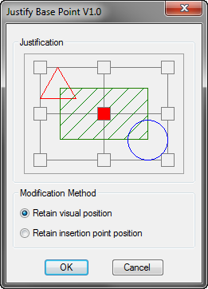
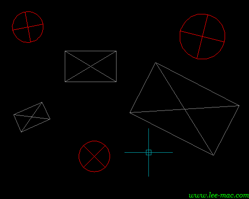

Justify Block Base Point
This page is delivered for consistency purposes only, as part of the LeeMac sample module of DynALisp, which shows how DynALisp turns existing AutoLISP programs into a module. The program and its description are the work of Lee Mac, who keeps all the credit for them. The original page, with the latest version, is on Lee Mac's website: https://lee-mac.com/justifybasepoint.html
See also Change Block Base Point.
| Function Syntax | LM-JustifyBlockBasePoint – original syntax: JBP (see aliases) |
| Current Version | 1.1 |
| Compatible with AutoCAD for Mac? | No |
| Compatible with AutoCAD LT? | Yes |
| Original Page | lee-mac.com/justifybasepoint.html |
Program Description
This program allows the user to change the base point location for multiple blocks to one of nine standard justifications.
Upon issuing the command syntax JBP (Justify Base Point) at the AutoCAD command-line, the user is prompted to make a selection of blocks for which to modify the base point location. As the program will modify the block definition for each distinct block in the selection, the user is only required to select one reference of a given block in order to change the base point for all other references of the block - the program will automatically ignore multiple references of the same block in the selection.
Following a valid selection, the user is presented with a dialog interface through which one of nine standard justification positions may be selected (Top Left, Top Center, Top Right, Middle Left, Middle Center, Middle Right, Bottom Left, Bottom Center, Bottom Right). The user may also choose whether the modification to the base point should retain the visual position of the block references, or retain the coordinates of the block insertion points.
Upon clicking the OK button to submit the selections, the program will modify the block definition of each distinct block in the selection accordingly. If one or more of the selected blocks is attributed, an ATTSYNC operation will be performed to ensure all attributes are in the correct positions relative to the new base points.
Finally, the drawing is regenerated to reflect the changes across all references of the modified blocks.
Please Note: A REGEN is required if the UNDO command is used to undo the operations performed by this program.
Program Interface

Demonstration

See also Change Block Base Point.
Bundled program notes
;;-------------------=={ Justify Block Base Point }==------------------;;
;; ;;
;; This program allows the user to change the base point location ;;
;; for multiple blocks to one of nine standard justifications. ;;
;; ;;
;; Upon issuing the command syntax 'JBP' (Justify Base Point) at the ;;
;; AutoCAD command-line, the user is prompted to make a selection of ;;
;; blocks for which to modify the base point location. ;;
;; ;;
;; As the program will modify the block definition for each distinct ;;
;; block in the selection, the user is only required to select one ;;
;; reference of a given block in order to change the base point for ;;
;; all other references of the block - the program will automatically ;;
;; ignore multiple references of the same block in the selection. ;;
;; ;;
;; Following a valid selection, the user is presented with a dialog ;;
;; interface through which one of nine standard justification ;;
;; positions may be selected (Top Left, Top Center, Top Right, ;;
;; Middle Left, Middle Center, Middle Right, Bottom Left, ;;
;; Bottom Center, Bottom Right). ;;
;; ;;
;; The user may also choose whether the modification to the base ;;
;; point should retain the visual position of the block references, ;;
;; or retain the coordinates of the block insertion points. ;;
;; ;;
;; Upon clicking the 'OK' button to submit the selections, the ;;
;; program will modify the block definition of each distinct block in ;;
;; the selection accordingly. If one or more of the selected blocks ;;
;; is attributed, an ATTSYNC operation will be performed to ensure ;;
;; all attributes are in the correct positions relative to the new ;;
;; base points. ;;
;; ;;
;; Finally, the drawing is regenerated to reflect the changes across ;;
;; all references of the modified blocks. ;;
;; ;;
;; Please Note: A REGEN is required if the UNDO command is used to ;;
;; undo the operations performed by this program. ;;
;; ;;
;;----------------------------------------------------------------------;;
;; Author: Lee Mac, Copyright © 2015 - www.lee-mac.com ;;
;;----------------------------------------------------------------------;;
;; Version 1.0 - 2015-08-01 ;;
;; ;;
;; First release. ;;
;;----------------------------------------------------------------------;;
;; Version 1.1 - 2019-09-08 ;;
;; ;;
;; Program updated to account for blocks nested within nested xrefs. ;;
;;----------------------------------------------------------------------;;
Command Names And Aliases
As in every DynALisp module, each program of this sample module has one main command, named LM-*, and the original command names of Lee Mac's page are kept as its aliases: they run the same command, and can be added, renamed or removed in Dyl-Suite (saved in Resources\Aliases.csv).
| Command | Aliases | Name |
|---|---|---|
| LM-JustifyBlockBasePoint | JBP | Justify Block Base Point |